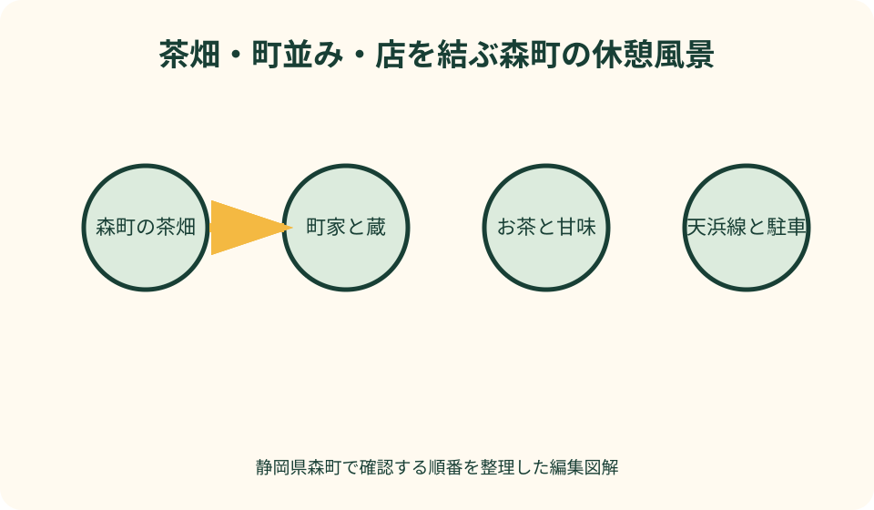
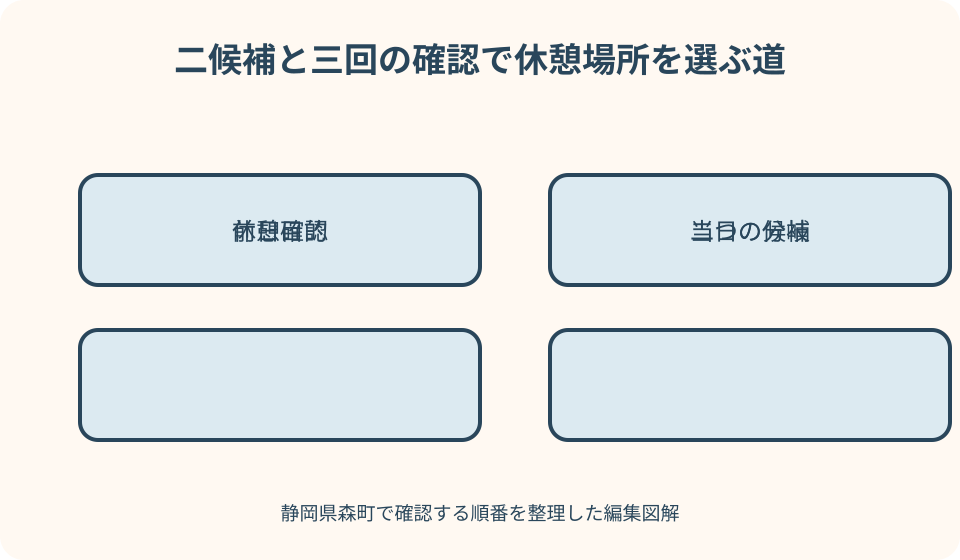

カフェ・お茶・甘味｜最終確認 2026-08-10
静岡県森町のカフェ案内｜お茶と甘味、町歩きの休憩場所を選ぶ
森町で休憩場所を選ぶときは、写真の印象だけで店を決めず、どこから来てどこへ向かうか、店内利用か買い物か、何分休めるかを先に決めます。町と観光協会の公式情報で候補を知り、営業・席・駐車・商品の提供は訪問日に店舗へ確認してください。

カフェ検索の前に、休む目的を一つ決める
静岡県周智郡森町でカフェを検索すると、茶を買う店、甘味を選ぶ店、店内で飲食できる場所、観光施設の休憩場所が同じ画面に並びます。名前や写真だけでは、いま必要な休憩に合うか分かりません。この記事では、店を順位付けせず、公式情報から候補を見つけ、当日の行程に合わせて確かめる順番を整理します。
最初に決めるのは店名ではなく、休む目的です。日本茶を味わいたい、甘い物を一つ食べたい、土産を買いたい、子どもを座らせたい、列車を待ちたい。目的を一つに絞ると、店内席が必要なのか、持ち帰りでもよいのかが決まり、検索結果の見え方が変わります。
次に休憩へ使える時間を決めます。三十分の休憩と、九十分かけて茶と町歩きを楽しむ予定では候補が違います。駐車、入店待ち、注文、会計、次の目的地への移動も休憩時間に含めます。提供時間を店が保証するとは限らないため、予約や列車がある日は余白を置きます。
この記事は、筆者が各店を利用した体験記ではありません。味、接客、混み方を実際に経験したようには書かず、2026年8月10日に確認した森町公式、森町観光協会、各店舗案内を土台にします。営業時間、定休日、商品、価格、席の利用方法は変わるため、訪問日に公式発信か電話で再確認します。
公式情報から分かる森町の茶と候補店
森町公式の観光案内は、町内の観光資源と観光資料へ進む入口です。店を探す前に町全体の位置関係を見て、午前と午後の目的地を置きます。森地区の町なか、小國神社がある一宮方面、アクティ森方面など、移動の軸が決まれば、休憩のためだけに町を往復する予定を避けられます。
森町公式の『遠州の小京都』案内は、森町が京都府京都市と交流宣言を行い、歴史や文化、町並み、自然を生かして魅力を発信していることを知る入口です。『小京都』を単なる装飾語にせず、社寺、町家、蔵、路地といった町の背景を歩いて確かめると、茶の時間が町歩きの一部になります。
森町観光協会の太田茶店の個別ページは、町内で茶に関わる店を知る一次的な案内です。住所や連絡先、紹介文を確認する入口として使えます。ただし掲載ページに商品写真や営業時間があっても、訪問日に同じ内容で営業していることを保証する資料ではありません。店内で飲めるか、買い物中心かも当日確認します。
森町観光協会は、フジヤ・茶風詩を『日本烏龍紅茶会社発祥の地 フジヤ・茶風詩（森町旧藤江勝太郎家住宅）』という名称で掲載しています。茶と歴史ある住宅の背景を知る入口になりますが、建物のどこまで見られるか、喫茶利用、営業日時は別の話です。利用したい日時と人数を伝え、現在の対応を確認します。
森町茶商組合の観光協会ページは、森町の茶を扱う事業者を地域のまとまりとして知る入口です。一軒のカフェ情報だけでなく、茶が町の生産と商いに結び付いていることを確認できます。茶葉を土産に選ぶ人は、品種名や包装の印象だけでなく、好みの濃さ、湯温、保存方法を店へ相談します。
観光協会の一覧には菓子店などほかの候補も掲載されていますが、『甘味がある』『席がある』『その場で食べられる』を一括して推測しません。商品販売の店であれば、店内飲食を当然と考えないことが大切です。候補ページから公式連絡先へ進み、現在の利用方法を確認してから行程へ入れます。
お茶と甘味を、森町の背景ごと選ぶ
森町で茶を選ぶ良さは、飲み物だけでなく、茶畑、生産、販売、町の景色を同じ地域で考えられることです。ただし『森町産』や具体的な生産地を、表示を見ずに断定してはいけません。商品ラベルと店の説明を確認し、分からないことは分からないままにします。地域名を便利な物語として付け足さない姿勢が必要です。
日本茶をその場で飲みたい人は、提供の有無に加え、どの程度の時間を見ればよいか尋ねます。急須で数煎楽しむ形と、短時間の一杯では滞在が違います。詳しい飲み方を知りたい場合も、混雑中に長い説明を当然に求めず、店が案内できる範囲へ合わせます。
茶葉を買う人は、誰が、いつ、どの道具で飲むかを伝えると選びやすくなります。実家への土産なら、急須を使うか、茶こし付きの湯のみか、ティーバッグが扱いやすいかを家族へ先に聞きます。高価な品を選ぶことより、受け取る人が無理なく淹れられる形を選ぶ方が実用的です。
甘味を目的にする場合は、当日の品ぞろえ、売切れ、持ち帰り時間を確認します。季節の商品が過去の写真に写っていても、現在の提供を約束するものではありません。特定商品だけを目当てに遠方から行くなら、訪問日の朝に店へ確認し、なければ茶や町歩きを主目的へ戻す代案を持ちます。
食物アレルギーや食事制限がある人は、商品名から原材料を判断しません。同じ設備や器具を使う可能性も含め、店が回答できる範囲を聞きます。重い症状の可能性がある場合は医療者から示された基準を優先し、確認が十分でなければ食べない選択をします。この記事が個別商品の安全を保証することはできません。

古民家と町並みは、背景ではなく歩く場所
『遠州の小京都』という言葉から古民家カフェを期待する人もいますが、建物の年代、用途、文化財としての位置付けは、店舗名や外観だけで決められません。店が古い建物を使っているか、内部を見学できるかも個別確認が必要です。記事では、確認できない建物を古民家と断定しません。
森地区の町歩きでは、店だけを点で訪ねるより、遠州森駅、町家や蔵の見える通り、社寺などを短い線で結ぶと、休憩の意味が分かりやすくなります。ただし路地は生活の場です。玄関先や敷地へ入らず、通行の邪魔になる撮影をせず、公開された場所と道を歩きます。
町並みを撮影するときは、古い建物だけでなく、そこで暮らす人の車、表札、顔が写ることに注意します。店舗で撮影したい場合も、飲食物は撮影できても店内全体やほかの客は認められないことがあります。投稿前に許可の範囲を確かめ、位置情報で生活動線を不用意に広めません。
茶の休憩を町歩きの終点にすると、疲れてから店を探す事態を避けられます。歩き始める前に候補の営業を確認し、店へ着く時刻を決めます。暑い日、雨の日、日没が早い日は歩く距離を縮めます。町並みを全部見るより、無理なく店へ戻れる一本の通りを選ぶ方が、同行者にも地域にも穏やかです。
駐車と天浜線は、帰りの時刻から組み立てる
車で店へ向かう場合、駐車場の有無だけでなく、利用できる台数、入口、車種、店までの歩行距離を確認します。観光協会ページの写真や地図だけで空き状況は分かりません。路上、近隣店舗、空いて見える私有地へ停める代案は持たず、満車なら第二候補へ移るか、時間を変えます。
小國神社から町なかへ移る日や、アクティ森方面と組み合わせる日は、休憩のための往復が大きくならないか地図で見ます。地図アプリの最短時間は、駐車、渋滞、歩行を含まない場合があります。午後の目的地へ向かう途中の店を第二候補にすれば、第一候補が利用できない日も移動を増やさずに済みます。
天竜浜名湖鉄道を使う場合は、遠州森駅など利用駅の公式情報と列車時刻を先に開きます。駅から店までの徒歩時間に加え、道を確認する時間、会計、駅へ戻る時間を入れます。行きの列車より帰りの列車を先に決め、一本逃した場合の次便も控えます。店に急いだ提供を求める前提で予定を作りません。
高齢者と歩く日は、地図上の徒歩分数をそのまま採用せず、段差、休憩、横断、トイレを含めます。子どもと歩く日は、ベビーカー、手つなぎ、急な立ち止まりを考えます。全員が同じ店まで歩かなくても、一人が買い物をして駅や車で合流する方法があります。家族に合う短い動線を優先します。
雨の日は、駐車位置から店まで濡れずに行けるとは限りません。濡れた傘や上着を置けるかを当然とせず、店の案内へ従います。夏は買った菓子や茶を高温の車内へ長く置かず、冬は暗くなる前に不慣れな道の移動を終えます。休憩は店内の時間だけでなく、その前後の安全まで含みます。
良い点：候補を一つの尺度で比べなくてよい
森町の茶店や菓子店を選ぶ良い点は、喫茶、買い物、土産、町歩きの休憩という異なる目的を組み替えられることです。すべての人に同じ一位を作る必要がありません。短時間なら買い物、ゆっくりできる日なら茶の説明を聞くというように、同じ人でも日によって選択を変えられます。
森町公式の観光案内、観光協会の個店ページ、店舗への確認という三段階があるのも良い点です。検索結果の短い説明だけで決めず、町全体、候補店、当日の利用条件へ順に進めます。情報源の役割を分けると、古い営業時間を現在の事実として扱う誤りを減らせます。
茶を買う行為が、生産や商いへの関心につながることも魅力です。森町茶商組合の案内を読むと、一店舗の商品だけでなく地域の茶業へ視野を広げられます。ただし地域を応援したい気持ちを、店へ過剰な説明や特別対応を求める理由にしません。必要なことを短く尋ね、表示と案内を尊重します。
町並みと休憩を組み合わせると、車で観光地間を移るだけでは見えない森町の日常へ目が向きます。その良さが成り立つ条件は、生活道路を塞がず、私有地へ入らず、ごみを残さないことです。地域の魅力を味わうことと、地域の暮らしを守ることは、同じ行動の中で両立させます。

注文したい点：公開情報だけでは決められないこと
観光協会の個店ページは候補を知る入口として役立ちますが、席数、段差、トイレ、ベビーカー、子ども椅子、支払い方法などは、すべての店で同じ形式には整理されていません。家族が判断したい項目と掲載情報の間に差があります。記事側では、不明な項目を否定せず、電話で確認する一覧として補います。
営業時間や定休日が掲載されていても、臨時休業、売切れ、催事出店までは固定できません。店舗公式の最新発信がある場合はそちらを優先し、見つからなければ電話で確認します。記事に時刻や価格を転記して長期間残すより、確認日と公式確認の手順を示す方が、訪問者にも店にも誤解が少なくなります。
『おしゃれ』『穴場』『映える』という紹介は、何が良いのかを曖昧にします。静かな席、町家の外観、茶器、季節の菓子など、確認できる要素へ分ける必要があります。また穴場という言葉が急な集中を招くこともあります。店の規模と地域の生活を無視して人を集める表現は使いません。
町歩きと店を結ぶ情報には、徒歩の目安、横断、休憩場所、駅への戻り方も必要です。ただし現地の道路状況を確認せずに安全な経路と断定できません。公開された観光資料と交通公式を読み、同行者の条件に合わせて短い範囲から試すことを勧めます。
対案・結論：二候補と三回の確認で決める
第一段階では、午前の目的地と午後の目的地を地図へ置き、その間にある店を公式観光情報から二つ選びます。第一候補は希望する茶や甘味に近い店、第二候補は次の目的地へ進みやすい店にします。同じ商品を扱う二店ではなく、店内利用と持ち帰りのように役割を変えると代案が働きます。
第二段階は前日の確認です。営業、利用したい時間、店内席の有無、駐車、希望商品の提供を、店舗の公式発信または電話で確かめます。価格や支払い方法が判断に必要なら、この時点で尋ねます。回答は家族の共有メモへ確認日時と一緒に残し、古い検索画面を当日の根拠にしません。
第三段階は出発前です。家族の体調、天候、列車、道路を見て、店内で休む、買って帰る、訪問を次回へ回すの三つから選びます。営業確認が取れない場合は、営業していると期待して長い移動を始めず、第二候補へ切り替えます。確認できないことを予定の前提にしないのが結論です。
店が満席なら、店の前で長く検索を続けません。第二候補の住所と連絡先を保存しておき、移動前に同乗者が確認します。持ち帰る場合は、飲食してよい場所、ごみ、保存時間を守ります。公園や駅の設備を勝手な飲食場所にせず、施設のルールと店の保存案内へ従います。
最終的に良い休憩だったかは、写真の多さではなく、同行者が無理なく座れたか、茶や甘味の背景を一つ知れたか、次の目的地へ焦らず進めたかで考えます。利用できなかった店は失敗ではなく、次回の候補です。一日に詰め込まず、町と店に再訪の余地を残します。
大石の視点：店ではなく一日の動線を案内する
私（大石）は、森町の店を案内するとき、店名を先に並べるより、誰とどこから来るかを聞きます。小國神社の帰り、遠州森駅からの町歩き、車で実家へ寄る途中では、同じ茶の時間でも必要な場所と長さが違います。目的地を点で紹介せず、駐車、歩行、休憩、帰路まで一本の線にするのが実用的です。
地域の小さな店へ行く日は、確認する側にも節度が必要です。営業時間中でも忙しい時間があります。公式ページで分かることを先に読み、電話では日時、人数、店内利用、駐車など必要な項目を短く尋ねます。特別な対応を当然と考えず、難しいと言われたら別の方法へ変えることが、長く利用できる関係につながります。
実家の家族と茶を飲む日なら、その時間を不動産の結論を迫る場にしません。帰り道、暗くなる道、次に一緒に寄りたい場所など、暮らしの小さな事実を聞くだけでも十分です。町を歩き、茶を飲む経験から分かるのは、査定額ではなく、その家族が森町でどのように時間を使ってきたかです。
記事の役割は、店を褒めて来訪を急がせることではありません。公式情報へ戻れる道を作り、利用者が自分の条件で選び、店と地域に無理を生まない形で休めるようにすることです。森町の茶と町並みを大切にするなら、最新確認と余白のある予定を、魅力紹介と同じ強さで伝えます。
まとめ
森町のカフェや茶店は、順位ではなく休憩の目的と移動から選びます。太田茶店、フジヤ・茶風詩、森町茶商組合の公式掲載を入口にし、店内利用、買い物、茶、甘味のどれが必要かを分けます。
町公式の観光案内と『遠州の小京都』で町全体と町並みを知り、駐車または天浜線の帰路を先に決めます。古民家、席、営業、価格、商品は名前や過去写真から断定しません。
第一候補と第二候補を用意し、前日と出発前に店舗公式または電話で確認します。この記事の事実確認日は2026年8月10日です。最新情報は下記の公式情報源から確認してください。
公式情報・確認先
掲載内容は次の一次情報を基礎に整理しました。営業、料金、催し、交通は変わるため、出発前または手続き前にリンク先で最新情報を確認してください。